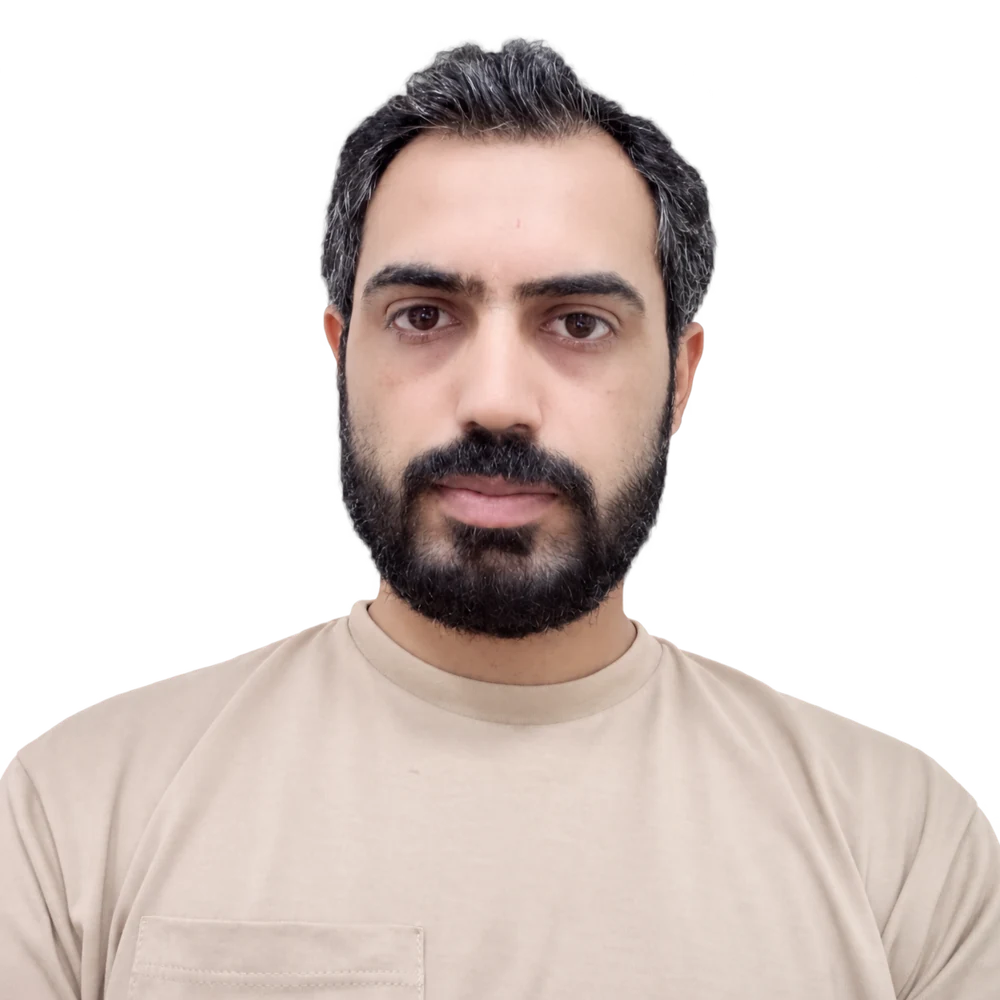
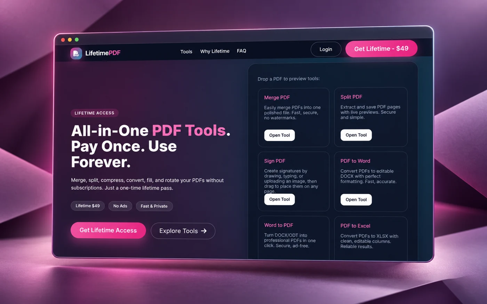
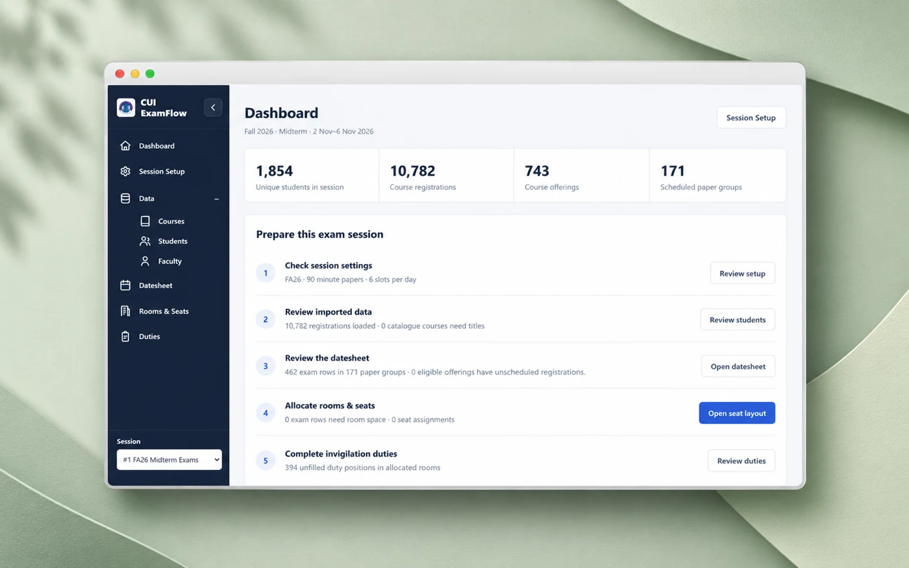
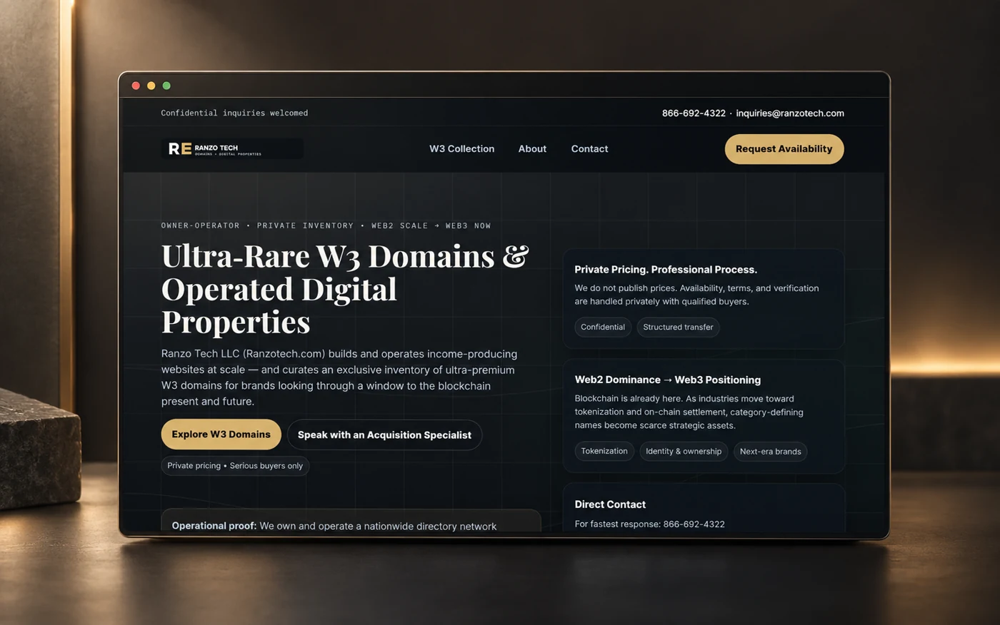
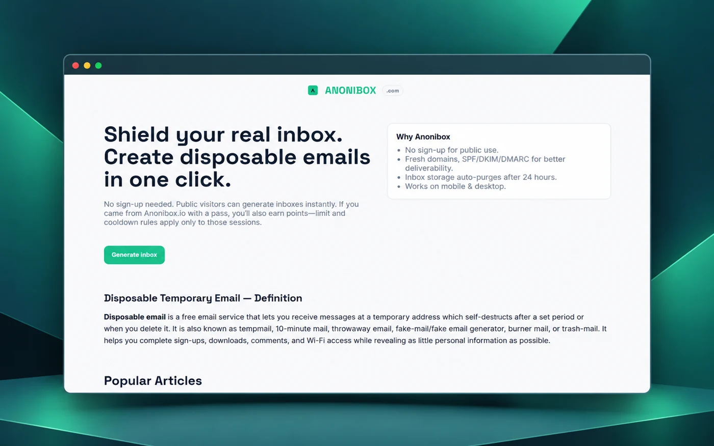
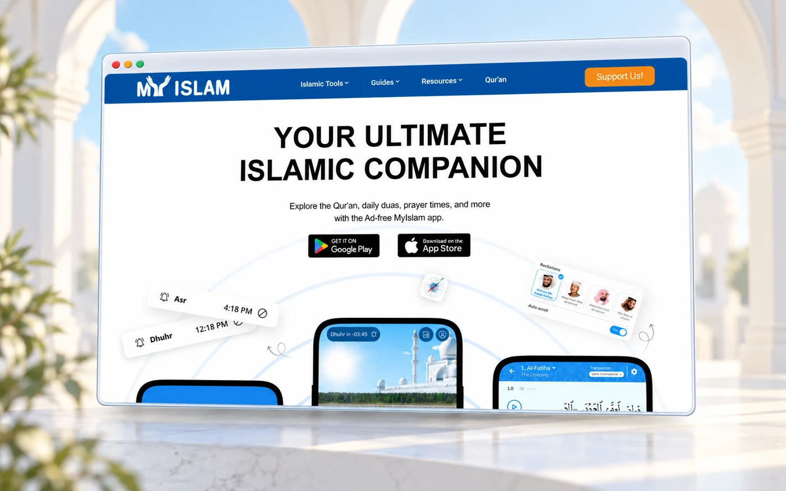
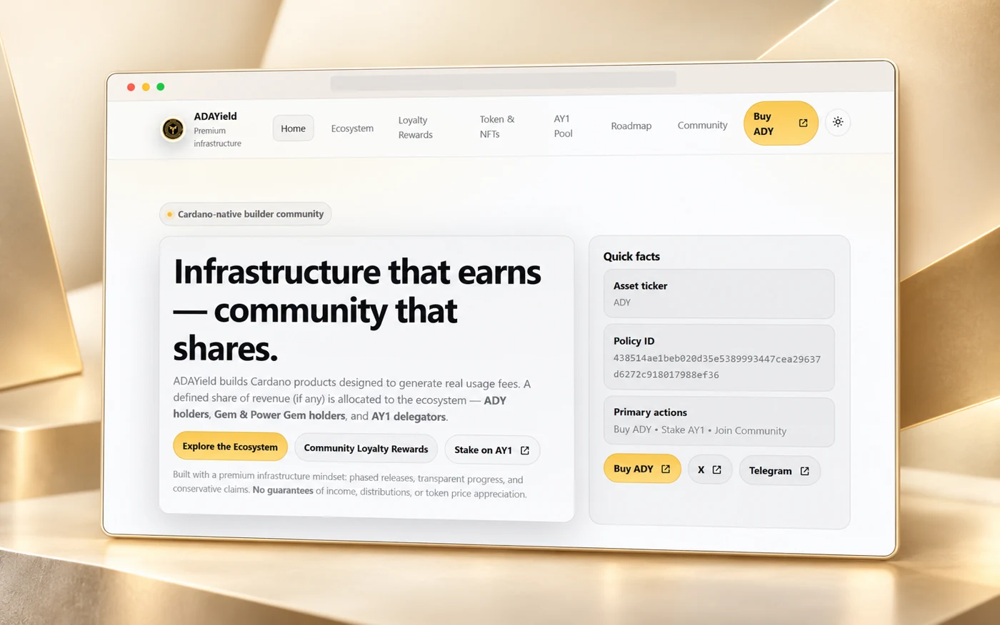

Jun 2025 — Present
Web Developer · Remote
Ranzo Tech LLC, USA
Web products across WordPress, the MERN stack, Web3 and LLM workflows.
Full-stack developer.
AI researcher. Educator.
I build practical software, explore intelligent systems, and teach the next generation of developers.
Based in Pakistan Working worldwide

EngineeringWeb, mobile & Web3
ResearchLLMs & recommender systems
TeachingCOMSATS University Islamabad
About
I’m a full-stack developer and researcher with 7+ years of experience in web and mobile development, and a faculty member at COMSATS University Islamabad, Attock, where I teach and mentor the next generation of developers.
My work connects product delivery with applied research: from everyday document tools and exam scheduling to Cardano platforms and AI assistants. My PhD research explores large language models and reinforcement learning for personalized recommender systems.
Professional journey
Industry practice. Academic depth.
Jun 2025 — Present
Ranzo Tech LLC, USA
Web products across WordPress, the MERN stack, Web3 and LLM workflows.
Mar 2016 — Present
COMSATS University Islamabad, Attock
Teaching web and mobile development, software quality assurance and scripting. Supervising final-year projects in AI, computer vision, Web3 and generative AI.
Jun 2018 — May 2025
MyIslam.org, Canada
Web, mobile and backend development across React, Node.js, React Native, Python and Laravel.
2022 — Present
COMSATS University, Attock
In progress. Research in LLMs, reinforcement learning and personalized recommender systems.
2013 — 2015
UET Taxila
Thesis: An Intelligent Medical Recommender System based on Machine Learning.
2009 — 2013
UET Taxila
Final-year project: augmented reality furniture visualization with Android and Unity.
Tools for impact
Useful products. Thoughtful engineering.

Web & SaaS · Document tools
A browser-based PDF toolkit for merging, splitting, signing, converting and protecting documents, with both client-side and server-side processing.
PHP · JavaScript · pdf-lib · PDF.js
Visit website
Education · Exam management
An end-to-end exam scheduler covering workbook imports, datesheets, room allocation, seating plans, invigilation duties and Excel exports.
Laravel · MySQL · PhpSpreadsheet
Watch walkthrough
Web & SaaS · Digital properties
A corporate website and domain portfolio for Ranzo Tech LLC, presenting its premium Web3 inventory, operated properties and inquiry workflows.
HTML · CSS · JavaScript · PHP
Visit website
Web & SaaS · Privacy tools
Disposable email inboxes for one-time signups and testing, with instant access, no signup for public use and automatic inbox expiry.
Email infrastructure · Web development
Visit website
Web & mobile · Content platform
Multi-year remote development and support for an Islamic content platform, contributing across web, mobile, backend and scripting workflows.
React · Node.js · React Native · Python · Laravel
Visit website
AI & Web3 · Cardano ecosystem
Full-stack work for a Cardano ecosystem platform, spanning its public web experience, product integrations, staking information and ongoing support.
Web development · Cardano · API integrations
Visit websiteA selection of products, client websites and research projects from across my career.
Browser games
A no-account browser arcade with game discovery pages and real-time multiplayer rooms for chess and Connect Four.
WebsiteWeb & mobile audio
An ambient sound mixer for rain, distant thunder and birds, with an Expo mobile app designed for background playback.
WebsiteWeb3 · Domain portfolios
A family of domain landing sites with tailored content and inquiry flows, including property, business, education and other specialist categories.
RepositoriesDirectories · Local discovery
Category and location websites for service discovery, covering trades such as plumbing, electrical work, cleaning and pest control.
PortfolioResearch · Machine learning
Master’s thesis project exploring an intelligent medical recommender system using machine learning, with source code available on GitHub.
Source codeWeb3 · Messaging
A wallet-aware blockchain messaging project focused on private communication and Web3 identity workflows.
Project notesAI · Domain assistance
A domain-specific AI assistant for answering questions about Cardano and the AdaYield ecosystem.
Project notesAI · Product platform
A web platform bringing together practical generative AI utilities and connected creative tools.
Project notesAI · Creative tools
A prompt-based meme creation tool that turns generative AI capabilities into a lightweight content workflow.
Project notesPrivacy · Email utilities
A disposable inbox utility for quick verification, testing and one-time web signups.
Project notesMedia · Radio
A radio and media website built around discovering stations and accessing online listening experiences.
Project notesSaaS · Career tools
A résumé builder that turns structured career information into formatted CVs and downloadable documents.
Source codeBusiness website
A service website presenting insurance offerings, business information and a clear route for customer inquiries.
Project notesMedia · Brand website
A product website presenting a done-for-you media offering through a concise, launch-focused web experience.
Project notesBusiness website
A South African business website structured around service information and customer discovery.
Project notesSearch · Discovery
A web product for the South African market focused on straightforward search and navigation.
Project notesBusiness · Product catalog
A visual website for decor and turf products, service browsing and customer inquiries.
Project notesProductivity · Web app
A focused habit-tracking interface for recording prayer consistency and revisiting daily progress.
Project notesWeb3 · Cardano tools
A Cardano-oriented web project supporting ecosystem tools and blockchain-related user workflows.
Project notesBusiness · Service website
A cabinet services website showcasing the business, its work and direct customer inquiry paths.
Project notesWeb3 · Compliance
A compliance-focused web product for Cardano and Web3 audiences, with clear product information and user flows.
Project notesProject artwork is composed from actual website screenshots. Some older projects link to portfolio notes or source code.